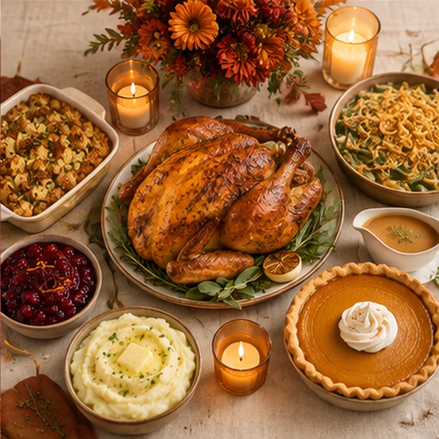

Choose your recipes
Pick from seven Thanksgiving favorites, then save your dishes to the feast.
Explore recipesYour holiday, made easier
From the first grocery list to the final slice of pie, Gather & Grace brings your Thanksgiving plans together in one cozy place.
Gather around the table, not the to-do list.

One meal, made simple
Three easy steps to a table everyone will remember.
Pick from seven Thanksgiving favorites, then save your dishes to the feast.
Explore recipesScale ingredient quantities for your table and convert measurements in a snap.
Use calculatorsCombine your ingredients into a grocery list. Check off what you already have.
Make a listThe best seat is together
We'll help you handle the details. You bring the people.